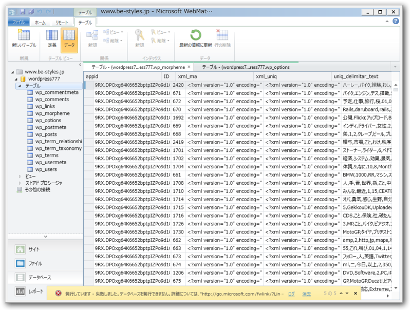

XREA/CoreServer の WordPress を Windows Azure Websites に移植してみる → 成功！
公開日：

（Windows 8 の Metro アプリ「黒板」で書いてみました*1）
前回（XREA/CoreServer の WordPress を Windows Azure Websites に移植してみる → あと一歩まで行けた - だるろぐ）は、XREA/CoreServer の WordPress 環境をローカルに保存して、 WebMatrix で動作可能な状態までメンテナンスし、 Windows Azure Websites へアップロードするというフローで、 WordPress の引っ越しを目論んだ……が最後の最後で失敗した。
そのときのエラーログの一部がこれ。
0:30:02: エラーの詳細: 0:30:02: An error occurred during execution of the database script. The error occurred between the following lines of the script: "145" and "255". The verbose log might have more information about the error. The command started with the following: 0:30:02: "-- -- Dumping data for table `wp_morpheme`
wp_morpheme テーブルってなんだろう。調べてみると、どうやら WordPress › WordPress Related Posts « WordPress Plugins というプラグインが作成する形態素解析データのテーブルらしい。

すんごくデカくて、 WebMatrix で開こうと思ったら固まりかけるぐらい。なんだか無駄に肥大化してるっぽいしそんなに必要ないので、バッサリと削除することに。

成功━━━━(ﾟ∀ﾟ)━━━━!!
あとは、旧ドメインへのアクセスを cname で Azure のドメインへ飛ばせばいい。その前にもう少しデザインをなんとか改善したいかな。そう、 WebMatrix でね！

ちなみにダンプファイルのサイズは 100MB ちょっとでした*2。そのうちどれぐらいを wp_morpheme が占めていたのか……面倒なので調べてないけど。
ふぅ……これで寝られる！